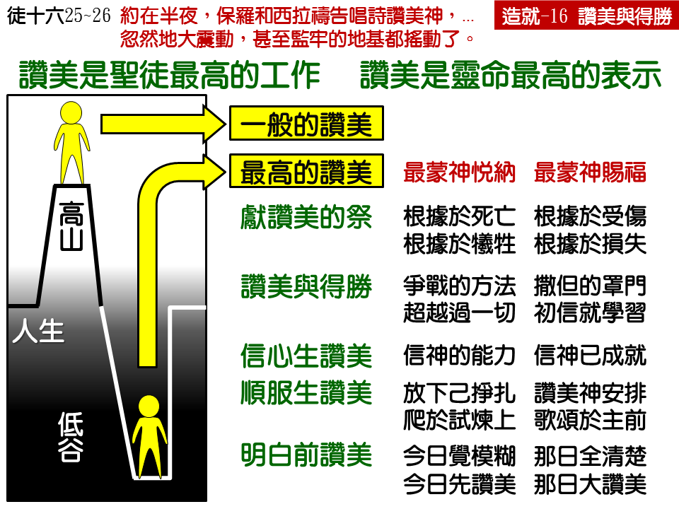

诗歌：109 首、644 首
重要经文：
诗篇二十二篇三节：但你是圣别的，是用以色列的赞美为宝座的。
希伯来书十三章十五节：所以我们应当借着耶稣，常常向神献上赞美的祭，这就是承认主名之嘴唇的果子。
使徒行传十六章二十五至二十六节：约在半夜，保罗和西拉祷告唱诗赞美神，众囚犯也侧耳听他们。忽然地大震动，甚至监牢的地基都摇动了，监门立刻全开，众囚犯的锁链也都松了。
诗篇一百零六篇十二节：那时他们才信了祂的话，歌唱赞美祂。
纲目要点：
壹 赞美的祭——来十三15，诗二三4。
贰 赞美与得胜——徒十二25~26，代下二十 20~22：
一 赞美是属灵得胜的方法。
二 赞美是爬到遭遇上面去。
三 初信就要学赞美的功课。
叁 信心生赞美－诗一 0六12。
肆 顺服生赞美：
一 赞美使我们的灵高过难处。
二 赞美是超越一切去摸着主。
伍 未明白先赞美－诗五十 23，林前十三 12：
一 今天不明白就学习先赞美。
二 那日明白时就有更大赞美。
信息选读：
赞美是圣徒属灵生命的最高表示
赞美乃是神的儿女最高的工作。或者说，圣徒属灵生命的最高表示，就是赞美神。神的宝座是神在宇宙中的最高点，而神“是用以色列的赞美为宝座的。”神的名字，神的自己，乃是因着赞美而被高举的。
赞美的祭
诗篇不但有赞美的篇，并且有受苦的篇。神特意给我们看见，发出赞美的人，神曾带他们经过困难的境地，叫他们的感觉受了伤。赞美的话不都是从顺利的人口中出来的，赞美更是从受管教、受熬炼的人身上出来的。所以，不是觉得最喜乐的人才是赞美声音最高的人；赞美声音最高的，常是那些在神面前经过困难的人。而就是这一种的赞美，能够最蒙神的悦纳，最蒙神的赐福。
希伯来十三章十五节说，“所以我们应当借着耶稣，常常向神献上赞美的祭，这就是承认主名之嘴唇的果子。”什么叫作祭？祭就是牺牲，祭就是有死亡、有损失。献祭的人必须有损失，才能献祭。神要怎样得着赞美呢？神要祂的儿女自己有所损失，而来赞美祂。不是有所得的时候才来赞美。有所得的时候的赞美，虽是赞美，却不是祭。祭的原则乃是根据于损失，祭的里面不能没有损失的性质。神要我们虽然受损失，仍然能赞美，那就是祭了。
当你在主面前学习赞美的时候，有一天你要看见你赞美不来。因为那天是你觉得痛的一天，那天是你一点光都没有的一天，那天是你遭遇非常不好的一天，那天是你受了许多冤枉、许多毁谤的一天，你觉得替自己流泪都来不及，哪里还能赞美神！就在那里，你必须记得：耶和华的宝座没有改变，主的名字没有改变，主的荣耀没有改变；你应当赞美祂，因为祂是该得着赞美的；你应当称颂祂，因为祂是该得着称颂的；你虽然遇见艰难，但祂还是照旧该得着赞美；你虽然遇见困乏，但你还是不能不赞美祂；就在那个时候，你的赞美变成了赞美的祭。
赞美与得胜
你看见了赞美是一个祭，还要看见赞美乃是我们属灵争战得胜的方法。祷告，在许多时候是争战，而赞美乃是得胜。祷告乃是属灵的争战，赞美乃是属灵的夸胜。神的儿女如果越认识神，就越要看见，连腓立比的监牢也是可唱诗的地方。（徒十六25。）保罗、西拉在里面赞美神，结果，把监牢的门都打开了。
当你祷告的时候，你乃是在那个遭遇里；当你赞美的时候，你是爬到那个遭遇的上面去。当我们在那里祷告、在那里苦求的时候，我们还是在那一件事情里面，还没有出去。你在神面前越苦求，就越看见你被那一件事情捆住了，那一件事情压在你的上面。但是，你如果能被神带到越过了监牢，越过了锁鍊，越过了身上的伤痛，越过了那些痛苦和羞辱，你就在那一个时候发出声音来，歌颂神的名。
许多人在那里看见撒但是那么凶，自己是那么软弱，就想奋斗，就想祷告。但是，在这里给我们看见一个特别的原则，属灵的得胜不是靠争战，乃是靠赞美。神的儿女常常有一个试探，就是总觉得难处太大，总要想用什么方法去对付。他们所注意的是方法，可是他们越在那里想方法，越不容易得胜。
初信的弟兄姊妹，不要以为要经过了多少年，才能学习赞美的功课。要知道，赞美的功课是从起头就可以学的。你每一次遇见困难，要求神怜悯，禁止你用手段，禁止你出计谋，而叫你学习赞美的功课。多少的争战，都能够借着赞美胜过；但因为缺少赞美，所以没有胜过。你如果相信神，那你即使在困难之中，也能够对主说，“我赞美你的名，你比一切高，你比一切强，你的慈爱永远长存！”每一个赞美神的人，都是超越过一切的，他能够借着赞美一直得胜。这是原则，这是事实。
信心生赞美
诗篇一百零六篇十二节的话，非常宝贵：“那时他们才信了祂的话，歌唱赞美祂。”这是以色列人在旷野的情形。他们信，他们就唱歌；他们信，他们就赞美。赞美有一个基本的内容，就是信。你不能空口的赞美，你不能随便的说“我感谢主！我赞美主！”必须你能够信，你才能够赞美。你有困难，你在那里祷告；你忧伤，你在那里祷告。祷告到一个时候，到一个地步，你心里能够信，你就立刻开口赞美。一个人有事情的时候，总是在那里求主。什么时候他里面有一点的信，里面相信神，相信神的大，相信神的能力，相信神的慈爱，相信神的荣耀，相信神要彰显祂的荣耀，就在这个时候，他要起头赞美，人在里面有了信，如果不赞美，迟早那个信要失去。这是我们凭着经历说的。 =顺服生赞美
基督徒的生活，是从赞美爬上去的。赞美乃是超越过一切去摸着主。主耶稣在地上走的路就是这条路。你也能够走在这条路上。你不是望着天叹气，在那里受试炼，你乃是爬在试炼的上面。你一赞美，你就在试炼的上面。人越要把你压住，你越在主面前爬起来说，“主，我感谢你，赞美你！”学习接受，学习知道祂是神，学习知道这是祂作的事。
未明白先赞美
有许多事情，虽然我们看见一点，却不明白里面的意思到底如何。我们所遭遇的，我们所经过的，不管是里面的感觉受伤，或者是外面的处境困难，我们只觉得是何等的痛苦，但不明白里面的意义，所以我们不会赞美。有许多的事，千万的事，今天看不见的，到那一天都要看见。当我们看见的时候，我们要低下头来赞美说，“主，你没有错。”今天，我们所经过的每一步路，都是祂的带领。到了那一天，我们要低下头来，说，“主，我是愚昧的人，当日没有赞美。我是愚昧的人，当时没有在你面前感谢你。”到那一天，我们看见明白之后，想到我们曾经埋怨过，我们就不知道要多么惭愧。所以在今天我们要学习说，“主，你所作的，虽然我不明白，但是我知道，你所作的不会错。”要学习相信，学习赞美。
课程复习：
一 为什么赞美是一个祭？
二 赞美与得胜有什么关系？
三 我们的赞美是如何产生的？
四 当我们不明白所遭遇的困境时该如何？
